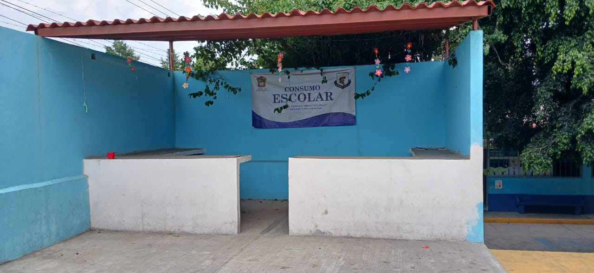
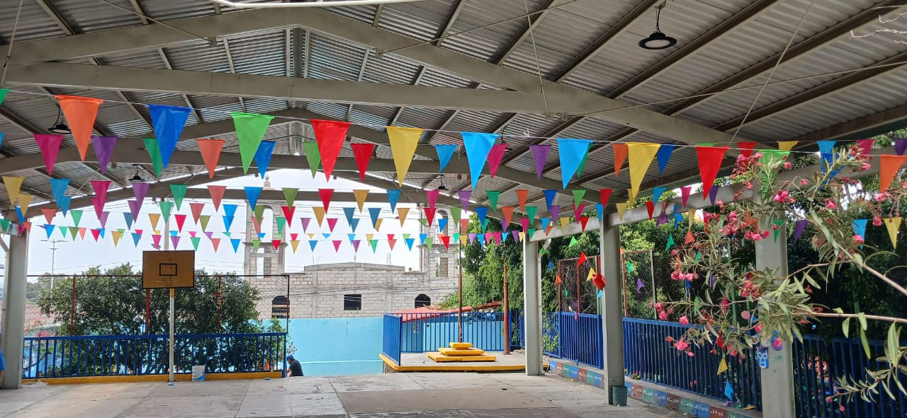
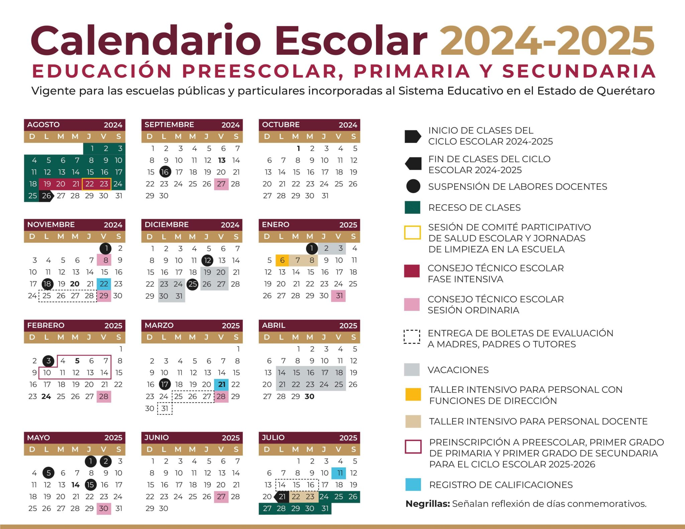

ESCUELA PRIMARIA “FRANCISCO VILLA”

MODELO EDUCATIVO - CALENDARIO ESCOLAR
Somos la Escuela Primaria Francisco Villa, comprometidos con una educación integral y de calidad.

La Nueva Escuela Mexicana (NEM) es un modelo educativo que busca transformar la enseñanza en México, promoviendo la equidad, inclusión y calidad educativa.
1.-Interdisciplinariedad:
Integra conocimientos de distintas áreas para un aprendizaje más completo.
2.-Formación docente:
Mejora la capacitación de los maestros para una enseñanza más efectiva.
3.-Evaluación y seguimiento:
Implementa nuevas estrategias de evaluación para medir el aprendizaje de manera más justa.
Aplicación en la Escuela Primaria Francisco Villa
En la Escuela Primaria Francisco Villa, el modelo de la Nueva Escuela Mexicana se puede reflejar en:
• Métodos de enseñanza centrados en el estudiante, promoviendo el aprendizaje activo.
• Programas de inclusión para garantizar que todos los niños tengan acceso a una educación de calidad.
• Actividades interdisciplinarias que fomentan el pensamiento crítico y la creatividad.
• Evaluaciones formativas que buscan mejorar el aprendizaje en lugar de solo calificar.

CALENDARIO ESCOLAR

DIRECCIÓN INSURGENTES NO. 13 SANTA CATARINA AYOTZINGO CHALCO, ESTADO DE MÉXICO C.P 56623
NUMERO DE TELEFONO 5516436297
CORREO 15epr4419t@dgeb.gob.mx